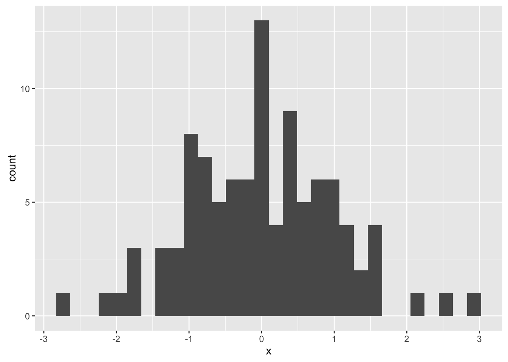
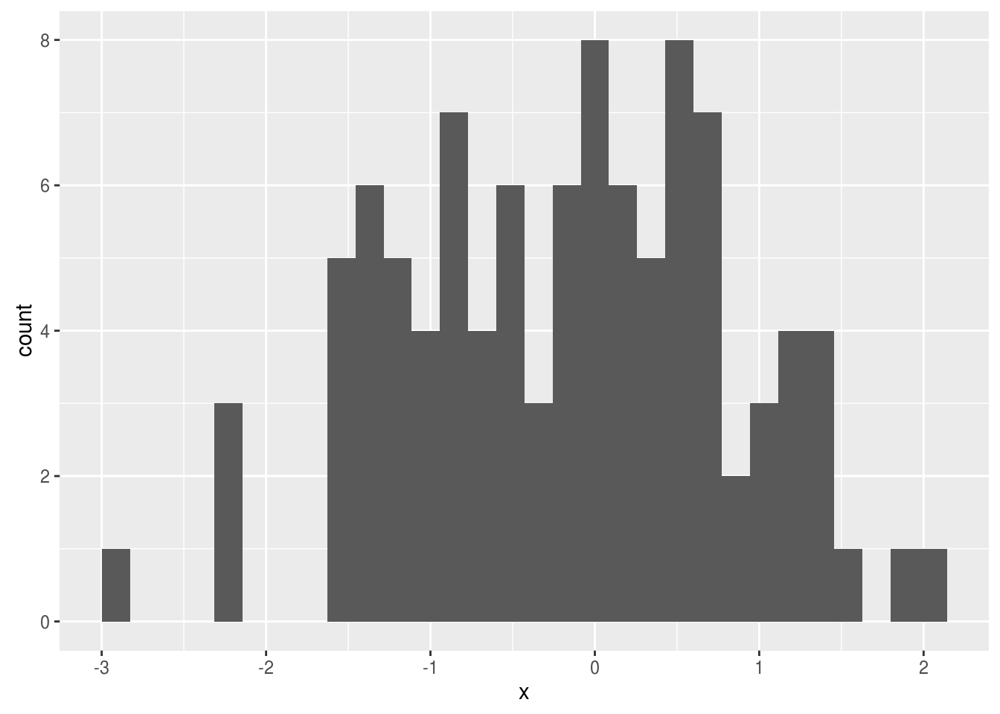
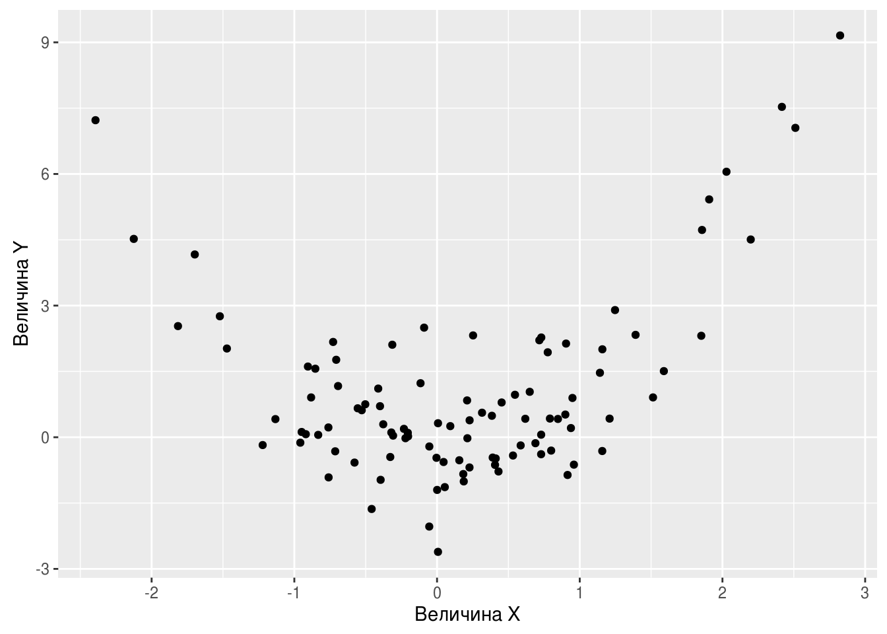

Глава 1 Первые шаги
library("knitr")
library("tikzDevice")ываыв а ываыв
1.1 Установка софта
Казалось бы, чего проще — поставить программу?! Однако не всегда всё идёт гладко.
Самая распространённая проблема, с которой мне доводилось бороться на разных компьютерах, — это русские буквы и пробелы в названиях файлов и папок под Windows.
Заповедь 1. Если ты используешь Windows, то никогда при серьёзной работе не используй русские буквы и пробелы в названиях файлов и папок. Папку с котиками можно назвать мои котики :)
Заповедь 1 легко нарушить даже не осознавая этого. Если имя пользователя Windows написано русскими буквами, например, Машенька, то все документы этого пользователя будут находиться в папке C:/Users/Машенька/Documents/.
Поэтому для серьёзной работы под Windows нужно создать нового пользователя с английским именем, например, Mashenka и залогиниться из-под него. Переименование старого пользователя не помогает.
1.1.1 R
…
1.1.2 Rstudio
…
1.1.3 LaTeX
…
1.1.4 git-клиент
…
1.1.5 Текстовый редактор
Самое важное: Word — это не текстовый редактор! Текстовый редактор — это программа с помощью которой редактируют файлы с текстовым содержимым, а Word сохраняет файлы в специальном формате, где кроме текста сохраняется ещё куча дополнительной информации. Расширение у текстового файла может быть довольно произвольным, .txt, .md, .R, .tex и так далее.
Текстовых редакторов много. Я советую кросс-платформенный открытый и бесплатный Atom.
1.1.6 STAN
…
1.1.7 jupyter
…
1.1.8 gretl
Тебе страшно? Тебя пугает даже список того, что нужно установить? Ты боишься R, а регрессию надо построить через 5 минут? Тогда разумное спасение — это gretl. Для gretl не обязательно учиться программировать: статистические тесты, графики и эконометрические модели доступны через меню. Кроме того, gretl даёт возможность пользователю взаимодействовать с R, что спасает в тех случаях, когда возможностей gretl не хватает.
Естественно, gretl кросс-платформенный открытый и бесплатный, gretl.
1.2 Весёлый калькулятор
…
1.3 Первый скрипт
….
Если текст программы содержит русские или другие неанглийские буквы, например, в комментариях, то при сохранении файла Rstudio предложит выбрать кодировку.
картинка
Кодировка определяет какой конкретно числовой код будет сопоставлен в записанном файле каждой букве. Например, букве ё в кодировке … сопоставлен код …
Для русского языка есть несколько распространённых кодировок: UTF-8 и CP1251. Linux и Macos используют по умолчанию кодировку UTF-8, а вот Windows сохраняет простые текстовые файлы в CP1251. Здесь сноска: на самом деле всё немного хитрее и помимо CP1251 Windows использует …
Если русскоязычный файл записать в одной кодировке, а пытаться открыть с помощью другой, то мы увидим на экране “кракозябры”. Поэтому хорошо, когда все используют одну кодировку. Кодировка UTF-8 более универсальна, чем CP1251. Например, с помощью кодировки UTF-8 в одном тексте можно использовать и русские буквы и французские акценты и китайские иероглифы.
Мы всегда будем использовать кодировку UTF-8.
1.4 Установка и подключение пакетов
Одна из сильных сторон R — это открытость: каждая домохозяйка может написать свой пакет для R и выложить его в публичное пользование. Пакеты расширяют возможности R. Для R написано более 10 тысяч пакетов. Среди них есть и откровенный мусор, и бриллианты, например, ggplot2, настолько ценные, что их копируют в другие языки программирования.
Скорее всего нужный тебе пакет можно найти:
- В официальном хранилище пакетов R, CRAN.
Здесь пакеты прошли минимальное тестирование. Это отнюдь не гарантия качества пакета, но всё же серьезный давно функционирующий пакет наверняка будет выложен на CRAN.
- В системе репозиториев github.com.
Здесь, как правило, разработчики публикуют более свежие версии пакетов, ещё не выложенные на CRAN, или молодые пакеты в процессе разработки.
- В хранилище пакетов для биологов
bioconductor.
Это своя отдельная экосистема пакетов R со специальным инсталлятором, блэкджеком и поэтэссами.
Есть и другие хранилища пакетов, например, R-forge и …, но они гораздо менее популярны.
Сначала надо определиться, какой пакет тебе нужен. Можно погуглить, можно воспользоваться официальным классификатором пакетов R ….
Чтобы начать использовать какой-нибудь пакет R нужно сделать две вещи. Во-первых, установить его. Установка означает, что пакет будет скачан из Интернета и сохранён в специальной папке на жёстком диске. Установка пакета выполняется один раз. Каждый раз при использовании пакета устанавливать его не нужно. Переустанавливать пакет имеет смысл только если вышла новая его версия. Во-вторых, нужно подключить пакет. Подключение пакета выполняется каждый раз перед его использованием.
С репозитория CRAN пакет ставится командой R:
install.packages("имя пакета")В Rstudio установить пакет с репозитория CRAN можно через меню: Tools - Install packages. Далее нужно набрать название пакета, можно указать сразу несколько названий через пробел, и нажать Install.
Здесь главное — не бояться сообщений красным цветом! Любые сообщения (messages) R выводит красным цветом и по неопытности их можно принять за ошибку, что скорее всего не так. Ошибка всегда сопровождается словом Error.
Установить пакет с github.com немногим сложнее. Здесь надо знать не только название пакета, но и название репозитория, где он хранится. Часто название репозитория — это фамилия автора пакета. Официальной классификации всех пакетов R на github нет, поэтому чтобы понять, какой нужен, остаётся только гуглить.
Кроме того, для установки пакетов с github.com потребуется установить с официального репозитория
Джентельменский набор пакетов R зависит от сферы деятельности, но практически всем сталкивающимся с анализом данных пригодятся:
…
Очень часто пакеты R ошибочно называют библиотеками. Библиотека — это папка на жёстком диске компьютера, где хранятся пакеты.
Если пакет установлен, то можно воспользоваться его командами. Если из пакета нужна всего одна команда и один раз, то быстрее указать и нужный пакет, и нужную команду. Например, вызовем команду qplot из пакета ggplot2 и построим гистограмму для случайной выборки из 100 нормальных стандартных случайных величин:
x <- rnorm(100) # генерируем случайную выборку из 100 нормальных N(0;1) случайных величин
ggplot2::qplot(x) ## `stat_bin()` using `bins = 30`. Pick better value with `binwidth`.
Если же ты хочешь использовать команды некоторого пакета много раз, то проще подключить пакет командой library(). При этом не надо будет каждый раз набирать название пакета и двойное двоеточие. Можно просто использовать команды из этого пакеты:
library("ggplot2") # подключаем пакет `ggplot2`
x <- rnorm(100) # генерируем случайную выборку из 100 нормальных N(0;1) случайных величин
y <- x^2 + rnorm(100)
# строим гистограмму величины x:
qplot(x) + xlab("Величина X") + ylab("Количество значений")## `stat_bin()` using `bins = 30`. Pick better value with `binwidth`.
# строим диагрраму рассеяния величин x и y:
qplot(x, y) + xlab("Величина X") + ylab("Величина Y")
При подключении пакета, как и при его установке, не стоит пугаться сообщений красным шрифтом. Только явное слово Error говорит об ошибке. Кроме того, часто можно столкнуться с предупреждением (warning) о том, что пакет был создан для более новой версии R.
Warning message: package 'xxx' was built under R version 3.3.1
Это означает лишь то, что …
Правила хорошего тона советуют подключать все нужные пакеты в начале скрипта.
1.5 Чтение и запись данных
Прежде всего неплохо бы знать, где лежит на жёстком диске файл с нужными данными. Напомню, что названия файлов и папок не должны содержать русским букв и пробелов!
У R есть понятие рабочей папки (working folder). В рабочей папке R ищет все требуемые файлы. Одно из простых решений — указать в качестве рабочей папки ту папку, где лежит нужный файл и далее прочитать его.
Допустим, нужный нам файл лежит в папке C:/project_A/data/. Тогда для установки рабочей папки достаточно выполнить команду:
setwd("C:/project_A/data/")Вместо этой команды можно воспользоваться меню Rstudio: Session - Set working directory - Choose directory. Далее выбрать нужную папку и нажать Open.
После этого можно прочитать нужный нам файл. Начнём с пакета rio позволяющего импортировать данные практически любого типа. На самом деле авторы пакета rio просто объединили усилия многих разработчиков в единую команду. И получилось хорошо :)
Хочешь загрузить данные в формате .csv? Пожалуйста!
data <- rio::import("имя_файла.csv")Хочешь загрузить данные в формате .xlsx? Пожалуйста!
data <- rio::import("имя_файла.xlsx")Однако не всегда всё идёт гладко, поэтому остановимся подробнее на разных форматах данных.
1.6 Интернет-источники данных
Зачастую данные не обязательно даже сохранять. В R есть пакеты, дающие доступ к некоторым источникам данных в Интернете:
quandlquantmodWDI
СССР — родина слонов!
Пакеты, дающие доступ к данным по России:
sophisthsesophist.hse.rucbrЦентральный Банк Россииdatamosdatamos.rufinam.ru.
А эти источники ещё ждут желающих написать пакет для R:
gks.ru
open data gov ???
1.7 Стиль кода
R одинаково выполнит и команды
x<-6-7
y<--6+9
x - yи команды
x <- 6 - 7
y <- -6 + 9
x - yОднако второй вариант гораздо приятнее для чтения. С тем, кто пишет код как в первом примере, Английская королева рядом не сядет! Чтобы иметь возможность войти в палату Лордов и Общин, тебе следует писать стильный код!
Если ты работаешь в команде, то руководствуйся тем стилем кода, который в ней принят. А для новичков я советую использовать стиль кода, которого придерживается Hadley Wickham, автор очень популярных пакетов R ggplot2 и dplyr:
- После запятой всегда пиши пробел. Перед запятой — никогда:
paste0("Hi ", "guys!")- Знак присваивания
<-, знаки арифметических действий (+,-,*), логические проверки (>,<,==и прочие) с двух сторон окружай одинарными пробелами.
x <- (3.5 + 7) * (2.8 - 9)- Открывающую фигурную скобку оставляй на старой строке, а закрывающую — ставь на новую:
if (x == y) {
message("Variables x and y are equal.")
}В Rstudio можно включить автоматическую проверку стиля кода в Tools - Global options - Code - Diagnostics. Настоящие сэры и истинные леди в разделе Diagnostics могут проставить все галочки.
1.8 Две записи функций
Мы все привыкли к тому, что домохозяйки пишут рецепт в естественном порядке, а математики функции — в обратном. Сравни:
Возьмите пепел перьев чёрного петуха
Добавьте печень дракона
Варите на медленном огне 2 дня
и
\[ \cos(\sin(|x|)) \]
У домохозяек порядок изложения совпадает с порядком действий. У математиков сначала написано про косинус, но считается он в самом конце.
Похоже Лёнька Эйлер и Алёшка Клеро
фото
введя обозначение \(f(x)\) отделили математиков от домохозяек и, вероятно, пустили математику по ложному пути. Было бы гораздо удобнее, если бы в математике функции также записывали в естественном порядке! Но обозначение \(f(x)\) мы впитали с молоком матери, уже вряд ли что исправишь.
R позволяет использовать обе традиции обозначени.
Традиция Эйлера-Клеро:
cos(sin(abs(10)))## [1] 0.8556344Для того, чтобы иметь возможность писать операции в естественном порядке, подключаем пакет dplyr:
library("dplyr")И теперь в традиции лучших кулинарных рецептов можно написать
10 %>% abs() %>% sin() %>% cos()## [1] 0.8556344Оператор %>% называется трубочкой (pipe). (? канал) По первому впечатлению кажется, что эти трубочки долго писать. Но стоит к ним привыкнуть и ощущаешь, что они безумно удобны для сложных операций!
1.9 Манипуляции с данными
(здесь про типы данных)
1.10 Графики
…
1.11 У меня ошибка!
Шеф! Всё пропало! Гипс снимают, клиент уезжает!
поговори с уточкой, посиди у озера
1.12 Ресурсы по R
Ты хочешь скачать научную статью или книжку бесплатно?
Научные книги можно найти на gen.lib.rus.ec.
Научные статьи можно скачать на sci-hub.cc. Есть даже бот
@scihubotдля Telegram, которые вышлет в ответ на запрос полный текст статьи.